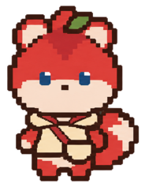

9:41●●● ▮
여행 지도
[티맵 API 지도 자리]
장소 핀과 내 위치는 티맵이 그립니다
1
2
3
장소 핀과 내 위치는 티맵이 그립니다

지도 앱을 열 수 없어요. 대신 아래 정보로 찾아가 주세요.
주소: [장소 주소 자리]
인증 지점: [인증 지점 설명 자리]
주소: [장소 주소 자리]
인증 지점: [인증 지점 설명 자리]
다음 장소 · 2번 운영 중
[장소 특징 한 줄] · 도보 약 8분 [예시]
받은 도장
미션
[미션 종류] · [미션 내용 자리]
하랑이 [승인 대사 대기 · 미션]
코스가 바뀌었어요
날씨가 바뀌어서 [다음 장소 이름]은 지금 야외 안내를 멈췄어요. 하랑이가 대체 길을 준비했어요.
사유: 날씨 변경 · 기준 시각 [확인 필요]
하랑이 [승인 대사 대기 · 경로 변경]
컷씬 ② 자리
첫 완주일 때 한 번 나옵니다. 건너뛰어도 앨범에 저장돼요.
완주 한 장
[날짜 예시][날씨 한 줄 · 기준 시각]
[하랑이 마무리 대사 · 승인 대기]